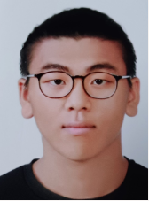

DongYoung Min

DongYoung Min is an integrated MS-PhD student in the Department of System Semiconductor Engineering at Yonsei University, beginning his studies in March 2025. His research interests lie in general-purpose CPU/GPU microarchitectures and heterogeneous systems. Passionate about computer architecture, Junhwan is committed to advancing innovation in the field while enhancing his expertise. He is excited to contribute to groundbreaking research projects and grow through active engagement in the academic community.
Email: DongYoung Min@email.com